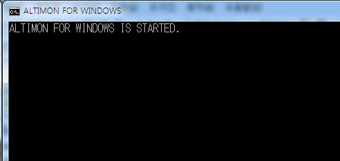

개요
Windows 용 모니터링 툴입니다.
적용 버전
- 이 툴은 ALTIBASE HDB 6.3.1 을 기준으로 작성 되었습니다.
- ALTIBASE HDB 5, ALTIBASE HDB 6 모두 사용할 수 있으나 일부 모니터링 항목에서 결과 오류가 발생할 수 있습니다.
- 필요한 경우 http://support.altibase.com/kr/ 또는 이 페이지에 댓글로 요청 글 남겨주세요.
모니터링 배치 프로그램
아래 압축 파일을 다운로드 하여 임의 폴더에 올려놓은 다음 압축을 풀어주세요.
압축을 풀면 두 개의 폴더와 두 개의 파일이 있습니다.
- altimon.bat : 모니터링을 위한 배치 프로그램
- altimon.vbs : 배치 프로그램을 백그라운드로 실행 시키기 위한 VB 파일
- ALTIMON_SCRIPT 폴더 : 모니터링 쿼리를 담고 있는 .sql 파일들이 존재
- ALTIMON_LOG 폴더 : 로그 파일 저장
설정
접속 정보 확인
altimon.bat 파일에서 ALTIBASE HDB 서버 접속 명령어 부분을 환경에 맞게 변경합니다.
set ISQL="%ALTIBASE_HOME%\bin\isql.exe" -s localhost -u sys -p manager -silent
모니터링 항목 추가
기본 모니터링 항목 외에 추가하고 싶은 항목이 있다면 ALTIMON_SCRIPT 폴더에 있는 all.sql 파일에 모니터링 쿼리를 추가하세요.
모니터링 쿼리에서 SELECT 절의 첫 번째 컬럼은 sysdate 를, 두 번째 컬럼은 _MON_ 로 시작하는 식별자를 넣어주세요.
SELECT TO_CHAR(SYSDATE, 'HH:MI:SS') TIME, '_MON_REP_GAP'
, REP_NAME
, REP_SN
, REP_GAP
FROM V$REPGAP
ORDER BY REP_NAME, REP_GAP;
모니터링 주기
altimon.bat 에서 마지막 부분, 아래 명령어에서 -n 뒤에 숫자를 변경해주세요. 이 숫자는 모니터링 주기를 의미 합니다.
초 단위로 환경에 맞게 수정합니다.
ping -n 60 127.0.0.1 > nul
예) 5분으로 설정할 경우 -n 60 을 -n 300 으로
지난 로그 삭제 기능
altimon.bat 파일 아래 부분에 forfiles 로 시작하는 명령어가 있습니다.
이 명령어에서 /D -30 옵션이 30일 전 로그를 삭제하라는 의미이니, /D 옵션 뒤 숫자를 변경합니다.
forfiles /P . /M mon.log* /D -30 /C "cmd /c del @file"
altimon.vbs 파일 수정
위 파일들을 다운로드 후 모니터링 할 서버의 임의 폴더에 올려주세요.
그리고 altimon.vbs 파일에서 두 번째 라인의 경로를 환경에 맞게 수정해줍니다.
Set WshShell = CreateObject("WScript.Shell")
WshShell.Run chr(34) & "C:\Users\Altibase\Desktop\altimon.bat" & Chr(34), 0
Set WshShell = Nothing
실행
포그라운드(foreground)로 실행하는 방법
윈도우즈의 명령 프롬프트(실행 창) 을 실행합니다. altimon.bat 파일이 위치한 폴더로 이동하고 배치 프로그램을 실행합니다.
C:\Users\Altibase>start altimon.bat 또는 C:\Users\Altibase>start altimon
C:\Users\Altibase>altimon.bat 또는 C:\Users\Altibase>altimon
윈도우 탐색기에서 배치 프로그램(altimon.bat) 이 위치한 폴더로 이동하고 alti_mon.bat 파일을 더블 클릭해도 됩니다.
포그라운드로 배치 프로그램을 실행시키면, 실행 창에 아래와 같이 알림 메시지가 뜹니다.

백그라운드(background)로 실행하는 방법
첨부된 파일들을 같은 폴더에 넣고 도스 창을 열어 해당 폴더로 이동 후 아래 명령어 수행합니다.
C> alti_mon.vbs
C:\Users\Altibase\Desktop>alti_mon.vbs Microsoft (R) Windows Script Host 버전 5.8 Copyright (C) Microsoft Corporation 1996-2001. All rights reserved.
종료
포그라운드로 실행했을 경우
배치 프로그램(altimon.bat)을 실행 한 실행 창을 닫거나 Ctrl+c 를 누릅니다.
백그라운드로 실행했을 경우
윈도우즈의 명령 프롬프트(실행 창) 실행하고 아래 명령어 수행합니다.
C> taskkill /fi "windowtitle eq ALTIMON FOR WINDOWS"
C:\Users\Altibase\Desktop>taskkill /fi "windowtitle eq ALTIMON FOR WINDOWS" 성공: 프로세스(PID 8216)에 종료 신호를 보냈습니다
로그
배치 프로그램을 수행하면 ALTIMON_LOG 라는 폴더 아래에 mon.log.YYYY-MM-DD 형태의 로그 파일이 생성됩니다.
{kind=link}